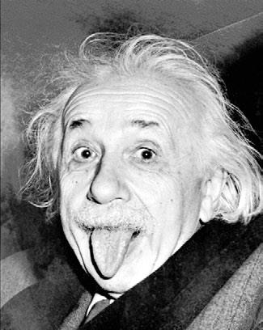
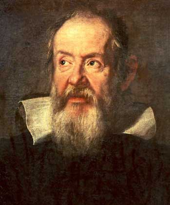

Исаак Ньютон
![[Исаак Ньютон]](images/isaac.jpg)
В детстве будущий учёный любил мастерить механические игрушки. Возможно, отчасти именно это дало ему возможность в дальнейшем сформулировать три основных закона механики.
Величайшими людьми в истории Исаак Ньютон считал Галилея, Кеплера и Декарта.
Помимо закона всемирного тяготения, он сделал немало других открытий. Так, именно Ньютон посредством экспериментов доказал, что белый цвет является смешением остальных цветов видимого спектра.
Вопреки распространённой легенде, Ньютону яблоки на голову не падали. Эту легенду популяризовал французский писатель Вольтер.
Учёный никогда не торопился с публикацией своих открытий, в результате чего многие из них были предъявлены миру спустя 20-30 лет после того, как они были сделаны.
Сэр Исаак Ньютон стал первым гражданином Англии, посвящённым королевой в рыцари за научные заслуги.
Около одной десятой личной библиотеки учёного занимали многочисленные книги по алхимии.
Будучи членом палаты лордов, Ньютон всегда посещал её заседания, но за долгие годы ни разу не раскрывал на них рта. Единственный раз, когда он попросил слова — когда он попросил закрыть окно.
Незадолго до смерти учёный работал над книгой, которую называл главным трудом своей жизни. К сожалению, что это была за книга, так никто и не узнал — в доме случился пожар, и рукопись сгорела.
Именно Исаак Ньютон выбрал семь основных цветов видимого спектра. Причём сначала он ограничился пятью, но потом добавил ещё два.
Альберт Эйнштейн

В течение жизни он написал более трёхсот работ в области теоретической физики, а также около полутора сотен научных трудов в других областях.
В детстве его школьные успехи были посредственными. С успеваемостью у будущего гения, вопреки распространённому мифу, всё было в порядке, но его недолюбливали многие учителя, что создавало определённые проблемы.
Учиться игре на скрипке он начал раньше, чем научился говорить — в 6-летнем возрасте.
Эйнштейн так и не получил аттестата об окончании гимназии.
Несмотря на то, что Альберт Эйнштейн прожил в США долгое время, он предпочитал разговаривать по-немецки.
Учёный холодно относился к спорту, заявляя, что предпочитает работать мозгом, а не мышцами.
Если какая-то научная проблема никак не хотела даваться ему, Эйнштейн начинал играть на скрипке. Как он сам говорил, во время игры на него часто снисходят озарения.
В юности Эйнштейну довелось поработать электриком.
За автограф он неизменно просил один доллар. Недостатка в желающих не было, а деньги он затем передавал на благотворительные цели.
Учёный любил курить трубку и даже был членом Монреальского клуба курильщиков трубок, базирующегося в Канаде (см. интересные факты о Канаде).
Галилео Галилей

Великий учёный происходил из обедневшего дворянского рода. Семья его, несмотря на своё происхождение, по уровню финансового достатка соответствовала крестьянам.
Отучившись в школе, Галилео Галилей намеревался посвятить свою жизнь церкви. Отец запретил ему становиться священнослужителем. Видя острый ум сына, он желал, чтобы тот занялся наукой.
Помимо научной деятельности, Галилей увлекался поэзией. Правда, прославился он всё-таки в качестве учёного, а не поэта, но стихов он написал немало.
В университете Пизы он изучал медицину и математику, но закончить учёбу ему не довелось, так как у его семьи не хватило денег на очередной платёж.
За свои книги, в которых Галилей доказывал, что Земля вращается вокруг Солнца, учёного судила инквизиция. В вину ему вменяли «уменьшение авторитета Библии». При этом сам учёный всегда считал себя человеком религиозным, и вообще «добрым католиком».
У Галилея было трое детей от одной и той же женщины, на которой, однако, он так и не женился.
Долгое время физическим и астрономическим открытиям Галилея никто не верил, так как они сильно противоречили устоявшейся в умах людей картине мира.
Именно Галилео Галилей изобрёл телескоп, а также первым применил его для наблюдения за ночным небом. Этот учёный — отец современной астрономии.
Во время преследования Николая Коперника инквизицией Галилей, к которому церковные сановники тогда относились лояльно, лично пытался заступиться за коллегу-учёного, но не достиг успеха.
Галилей в свой телескоп разглядел кратеры и горы на поверхности Луны. До этого все полагали, следуя утверждению Аристотеля, что все небесные тела обладают совершенно гладкой поверхностью (см. интересные факты о Луне).
Отношения Галилея с католической церковью испортились окончательно после его заявления о том, что священники должны заниматься спасением душ, а не лезть в науку. Вскоре после этого учение о гелиоцентрической системе мироздания, которое он продвигал, было объявлено вредным и запрещённым.